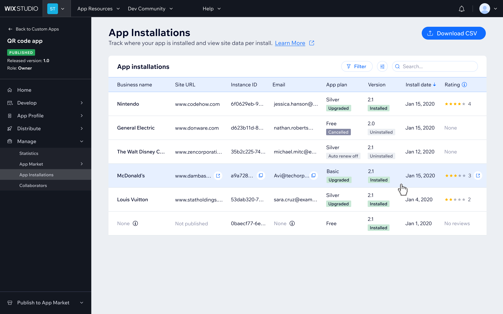
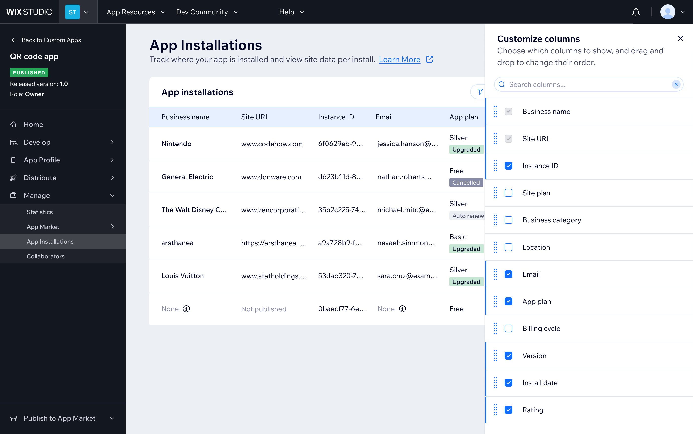
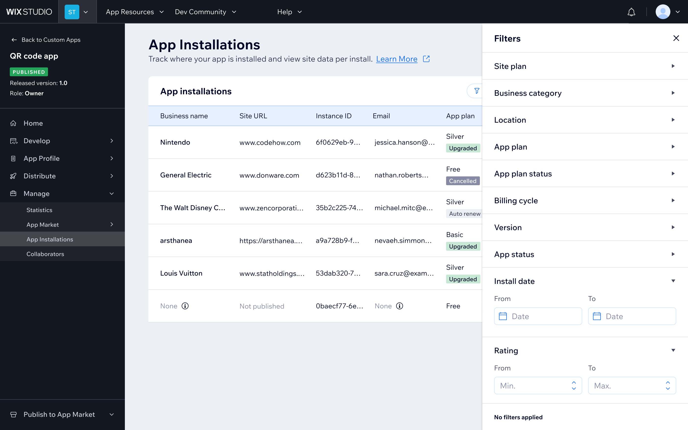
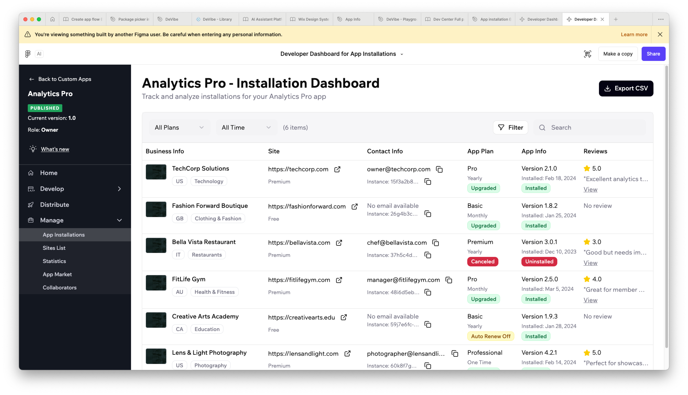
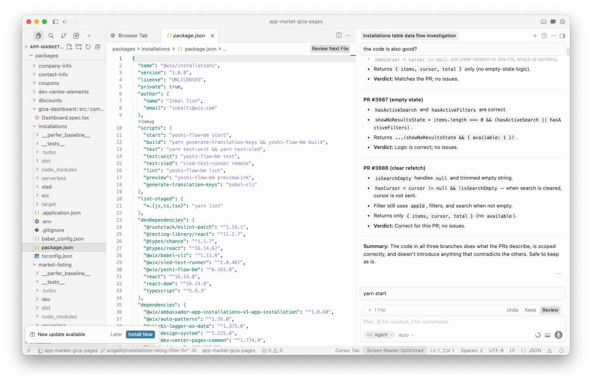
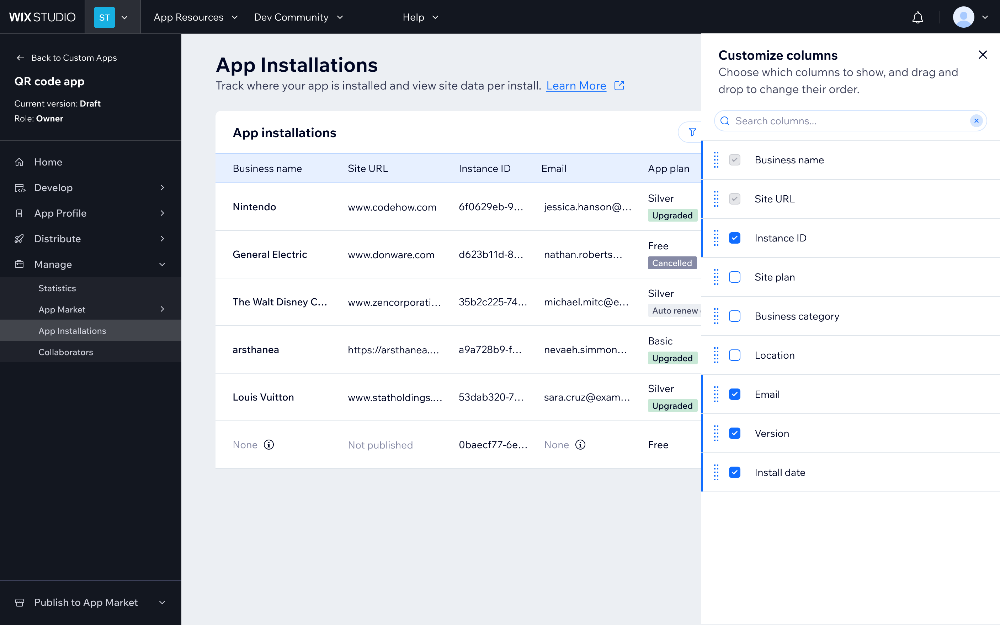
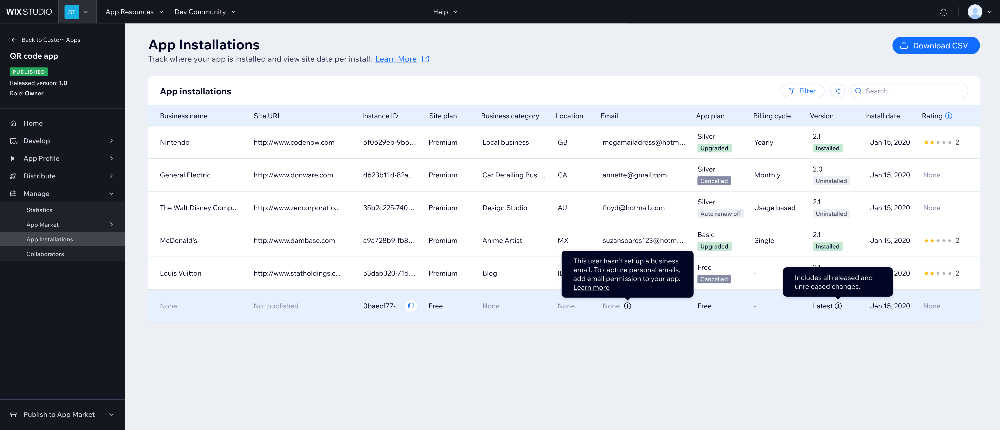

Installations Page
Developer dashboard for installation data and user insights
I led UX for a new developer-facing data hub that surfaces installation and user insights in the developer dashboard - built in response to high-volume demand.
The work required navigating PII constraints with Legal, aligning with backend on what the API could actually expose, and designing for developers with very different technical needs and use cases.

What I Did
Understanding the problem
- The PM and I started by mapping the gap: developers had no visibility into who was installing their apps.
- User interviews confirmed it was a top pain point. This came up at almost every developer interview! Developers were cobbling together workarounds and emailing our support team just to get basic usage data
- Developers needed this data for user support, marketing (send emails and upsells), and trends (what geo are their users from)
- I looked at how Shopify and Apple's App Store Connect handle the same problem for their ecosystems
Navigating constraints
- Legal was a big part of this: personal and business emails required different permission levels, so rather than hiding data, we designed contextual tooltips to help developers request the right access
- Aligned with backend on what different APIs could actually expose, and when
Designing the solution
- Started with a quick mock in Figma Make to validate the direction
- Designed the table, filters, data export, and column customization in Figma
- Defined the default view
- Led UX writing for the project, working closely with technical writers and drafting the help article
Shipping it
- Joined the implementation team using Cursor and Claude Code to add features and fix bugs
- Contributed a year selector to the Wix Design System in code, making it available across the platform
- Caught major server-side bugs where the data coming back was incorrect
- Launched with a small controlled rollout given the migration complexity. It's live now
Impact
Since opening to all developers, the majority of those who visited the Wix Developer Center and had published apps discovered the table. Of those who saw it, the majority took action, copying data, opening sites, and applying filters. This was after a quiet launch with no promotion.
Developer feedback: "We already had email sequences hooked on webhooks, but this lets us manually follow up with users - especially for the non-technical team members." "Very good feature overall - thank you!"
The roadmap included expanding with cancellation reasons, deeper filtering, and eventually connecting the table to inbox and email marketing tools.
The table


Column customization — show, hide, and reorder columns. " loading="lazy">

Filtered view — narrow by time range, plan, or other parameters." loading="lazy">Behind the scenes

Figma Make — initial exploration." loading="lazy">
Cursor — features added and bugs fixed during implementation." loading="lazy">
Edge & empty states

Private apps — fewer columns, since some fields don't apply before launch." loading="lazy">

Inline data-limit tooltip — flags which data is excluded and why, without breaking flow." loading="lazy">
Bottom line
The hardest part wasn't designing the table - it was understanding what data could realistically be surfaced through the API, navigating PII constraints, and aligning with backend on what was actually possible. The engagement rate on first exposure was high: whoever found it, used it. The remaining challenge is discoverability, not product.